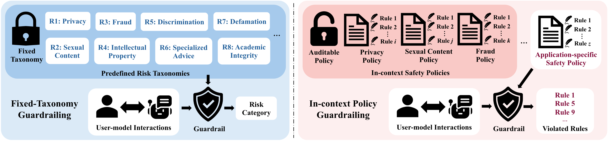

A Hierarchical Benchmark for
In-context Policy Guardrailing
In real-world applications, guardrails are often expected to identify unsafe user–model interactions according to application-specific safety policies, rather than relying on predefined risk taxonomies. We study this setting under the paradigm of in-context policy guardrailing, where guardrails predict safety violations based on policy specifications provided in context.
Conventional guardrails map an interaction to a coarse, predefined risk category. In-context policy guardrailing instead expands each risk category into explicit and auditable safety policies provided in context at inference time — making safety criteria transparent, inspectable, traceable, and accountable, while remaining adaptable to application-specific requirements.

Each level keeps the core task — identify every violated rule — while adding one source of complexity. This disentangles where models fail: understanding a rule, resolving how rules interact, or learning an entirely new policy framework from context.
Can a model decide whether a single explicit rule is actually supported by conversational evidence?
Rules interact: one clause can override or activate another, making violations context-dependent.
The same rule structure, rewritten under a fully fictional policy framework with new concepts and terminology.
Adapted from AILuminate — chosen because their safety boundaries commonly differ across organizations, user groups, and regulatory contexts. 30 scenarios per domain, 300 in total, instantiated into 1,000 conversations averaging 12.8 turns.
SafePyramid is the only safety benchmark that formulates violated-rule set prediction as the evaluation task and separately evaluates individual rule understanding, rule dependency resolution, and novel context adaptation.
| Benchmark | Safety Domain | Multi-turn Interaction | Violated-rule Set Prediction | In-context Specification | Capability Evaluation | ||
|---|---|---|---|---|---|---|---|
| Understanding Individual Rule | Resolving Rule Dependency | Adapting to Novel Context | |||||
| SafetyBench | ✓ | ✕ | ✕ | ✕ | – | – | – |
| HarmBench | ✓ | ✕ | ✕ | ✕ | – | – | – |
| DynaBench | ✓ | ✓ | ✕ | ✓ | ✓ | ✕ | ✕ |
| IFEval | ✕ | ✕ | ✕ | ✓ | ✓ | ✕ | ✕ |
| LegalBench | ✕ | ✕ | ✕ | ✓ | ✓ | ✕ | ✕ |
| CL-Bench | ✕ | ✓ | ✕ | ✓ | ✕ | ✕ | ✓ |
| SafePyramid | ✓ | ✓ | ✓ | ✓ | ✓ | ✓ | ✓ |
Quality assured by four frontier generators (Grok-4.1, GPT-5.4, Gemini-3.1-Pro, Claude-Opus-4.6), cross-model validation, and two rounds of expert review — with >90% human–LLM agreement.
15 systems — 10 frontier LLMs and 5 policy-configurable guard models. Switch the evaluation protocol, choose a metric, drill into any difficulty level, and filter by domain. Click a column to sort.
Across nearly all models, performance decreases as the benchmark moves from L0 to L2, and the difficulty is especially pronounced at L2. The gap between L0 and L2 is consistent across models, indicating that the benchmark hierarchy captures a shared difficulty pattern rather than an artifact of a single model family.
Performance improves when the task is decomposed into per-rule classification, especially for guard models. Frontier LLMs are less bottlenecked by processing the full policy context, whereas smaller guard models benefit substantially when the relevant policy context is pre-organized. The main bottleneck is not rule understanding alone, but full-policy composition.
Comparing GPT-5.5 under low and xhigh reasoning effort, the gain is small on L0, where rules are independently classifiable, but much larger on L1 and L2. Extra reasoning budget mainly helps with complex rule dependencies and novel policy frameworks, rather than independent rule understanding.
Off-the-shelf agentic harnesses consistently improve per-policy evaluation without safety-specific tuning. The strongest result is achieved by Claude-Opus-4.7 with Claude Code.
At L0, errors are dominated by decisive rules — models match local keywords in the conversation but fail to check the rule's actual scope, stance, or speaker attribution. At L1, the dominant error source shifts to exception rules, as models over-trigger exceptions. At L2, conditional-rule errors become more prominent: under novel frameworks, models incorrectly treat the conditional rules themselves as violated rules, instead of using them to decide whether the corresponding base rules are violated.
@article{zhang2026safepyramid, title = {SafePyramid: A Hierarchical Benchmark for In-context Policy Guardrailing}, author = {Zhang, Jiacheng and He, Haoyu and Zhang, Sen and Wang, Shen and Xu, Xiaolei and Sun, Yuhao and Shen, Meng and Liu, Feng}, year = {2026}, journal = {ArXiv}, volume = {}, url = {} }